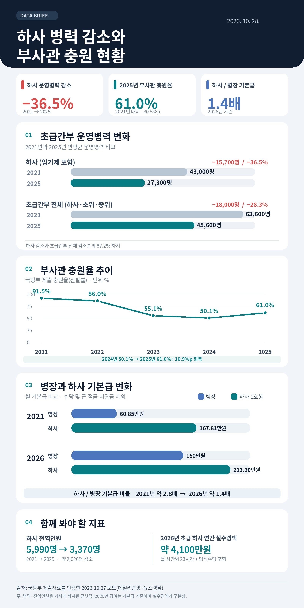

월 초과 23시간 + 당직 + 기타 등등
영끌해서 4,100만원이라는데
탈주보다도 유입씹창때문에
하사 3명 중 1명 이상이 공석
그냥 하사를 안함
소위•중위 미달은 중대 소대장 1명을
상사로 바꿔서 대처한다는데
그럼에도 800명 이상 미달
하사는 병장에게 그걸 시킬수도 없고 답도 없음
일 잘한다고 진급시켜주면 다 폐급될거잖아
참고로 하사 1호봉과 하사 3호봉 급여는 3만원 정도 차이난다
병사에서 전문하사 혹은 현역부사관으로 해봤자 답도 없음
연봉 더 올리면 해결되는건데 왜 못하지 ?
군대안간 만19세이상 여성부터 40세 여성까지 무조건
국방세 강제징수해서 부사관 장교 월급 더 주고
쓰잘데기없는 복지 정책에 들어가는거 다 때려부우면 끝나는데 아직 안급하네 ㅋㅋ 아니면 나라 팔아넘길려고 저러나